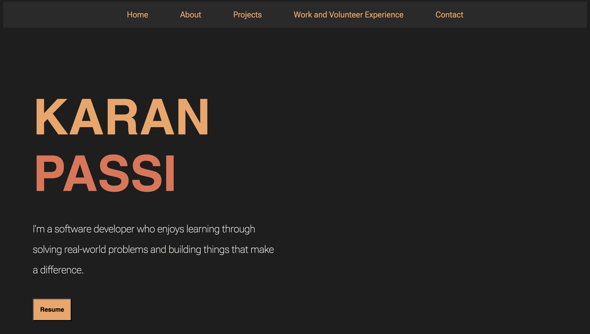

Organize Me
Organize Me is a web application designed to help Simon Fraser University (SFU) students manage their coursework efficiently. Students securely log in using their SFU credentials. The app then utilizes Canvas's OAuth2 protocol to connect to the student's Canvas account, automatically retrieving upcoming assignments and presenting them in a user-friendly interface.

Personal Portfolio
This is my personal portfolio website built from scratch using pure CSS and HTML. It demonstrates a small chunk of the work I have done, the skills I'm learning, and the experiences I have had along the way. It's minimalist and clutter-free with focus on smooth navigation.